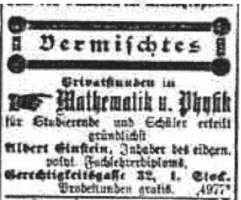

Sự ra đời của Lieserl thậm chí khiến cho Einstein thể hiện bản năng xây dựng tổ ấm, lo lắng cho gia đình, mà vốn trước đó không mấy rõ ràng. Ông tìm được một căn phòng lớn ở Bern, và ông vẽ phác thảo cho Marić hình dung về căn phòng này, trong đó có sơ đồ thể hiện vị trí của chiếc giường, sáu chiếc ghế, ba chiếc tủ, ông (“Johnnie”), và một chiếc ghế dài có chữ “nhìn kìa”. Tuy nhiên, Marić không định chuyển tới đó với ông. Họ chưa cưới nhau và một công chức người Thụy Sĩ nhiều tham vọng không nên để bị phát hiện sống chung với một người phụ nữ khi chưa kết hôn như thế. Thay vào đó, một vài tháng sau, Marić trở về Zurich, đợi ông nhận việc và cưới bà như đã hứa. Bà không mang Lieserl theo.
Einstein và con gái của mình hình như chưa bao giờ gặp nhau. Cô bé, như chúng ta sẽ thấy, chỉ được nhắc đến vắn tắt một lần trong một bức thư gần hai năm sau, vào tháng Chín năm 1903, và sau đó không được đề cập nữa. Trong thời gian đó, cô bé đã được để lại Novi Sad cho họ hàng hoặc bạn bè của Marić để Einstein có thể duy trì lối sống không vướng bận và sự đứng đắn cần có của một thị dân trung lưu để trở thành một viên chức Thụy Sĩ.
Có một chỉ dấu bí ẩn gợi ý rằng người chăm sóc Lieserl có thể là bạn thân của Marić, Helene Kaufler Savić, người mà bà gặp năm 1899 khi sống cùng nhà trọ ở Zurich. Savić xuất thân từ một gia đình Do Thái ở Vienna; năm 1900, bà kết hôn với một kỹ sư người Serbia. Trong thời kỳ mang thai, Marić đã viết cho Savić một bức thư thổ lộ tất cả nỗi buồn, nhưng bà đã xé bức thư đó đi trước khi gửi. Hai tháng trước khi Lieserl chào đời, bà giải thích với Einstein rằng bà mừng vì đã làm thế, bởi bà không nghĩ “ta nên vội tiết lộ bất cứ điều gì về Lieserl”. Marić cũng nói thêm rằng thỉnh thoảng Einstein nên viết thư cho Savić. “Bây giờ bọn mình phải đối xử với cô ấy thật tử tế. Nói cho cùng thì cô ấy sẽ giúp bọn mình làm một việc quan trọng đấy.”
Khi đang chờ được nhận vào làm tại Cục Cấp bằng Sáng chế, Einstein tình cờ quen một người làm việc ở đó. Người này than phiền rằng công việc rất nhàm chán, và lưu ý rằng công việc Einstein đang chờ “có vị trí thấp nhất”, vì vậy ít ra là ông không phải lo chuyện người khác sẽ xin vào vị trí này. Einstein không hề bối rối. Ông kể với Marić: “Có những người lúc nào cũng thấy mọi thứ nhàm chán.” Đối với sự xem thường dành cho vị trí thấp nhất, Einstein nói với bà rằng họ nên thấy điều ngược lại: “Vì thế mà bọn mình sẽ chẳng thể nào lơi là việc đạt đến đỉnh cao.”
Cuối cùng Einstein cũng được nhận công việc này vào ngày 16 tháng Sáu năm 1902, khi một phiên họp của Hội đồng Thụy Sĩ chính thức chọn ông “tạm thời làm chuyên viên kỹ thuật bậc ba của Cục Sở hữu Trí tuệ Liên bang với mức lương năm là 3.500 franc”, mức lương này quả thực còn cao hơn tiền lương của một giảng viên chính.
Cơ quan của ông nằm trong tòa nhà Bưu chính Điện báo mới xây ở Bern, gần tháp đồng hồ nổi tiếng thế giới nằm trên cổng chào của khu phố cổ. Ngày nào Einstein cũng đi ngang qua nó khi rẽ trái từ khu căn hộ của ông đến chỗ làm. Tháp đồng hồ này được xây dựng không lâu sau khi thành phố được thành lập vào năm 1191; và năm 1530, một thiết bị thiên văn giúp xác định vị trí của các hành tinh được lắp thêm vào đây. Cứ mỗi giờ, trên đồng hồ lại xuất hiện những bức hình như anh hề nhảy múa rung chuông, một đoàn gấu diễu hành, gà trống đội vương miện và một hiệp sĩ mặc giáp, theo sau là Thần thời gian với vương trượng và chiếc đồng hồ cát.
Đây là chiếc đồng hồ báo giờ chính thức cho ga tàu hỏa gần đó, tất cả các đồng hồ khác trong sân ga đều được chỉnh theo nó. Các đoàn tàu đến từ những thành phố khác, nơi giờ địa phương không phải lúc nào cũng chuẩn, sẽ nhìn lên tháp đồng hồ Bern mà chỉnh lại đồng hồ của mình khi tàu chạy vào thành phố.
Vậy là cuối cùng Albert Einstein cũng dành bảy năm sáng tạo nhất của cuộc đời mình – thậm chí cả sau khi ông viết các bài báo tái định hướng vật lý học – đến chỗ làm vào 8 giờ sáng, 6 ngày một tuần, kiểm tra các đơn xin cấp bằng sáng chế. Vài tháng sau, ông viết cho một người bạn: “Tôi bận khủng khiếp. Mỗi ngày, tôi ngồi ở cơ quan 8 tiếng, bỏ ra thêm ít nhất là một tiếng dạy kèm, và sau đó tôi còn làm một số nghiên cứu khoa học nữa.” Nhưng ta sẽ sai khi nghĩ rằng công việc nghiên cứu các đơn xin cấp bằng sáng chế là vất vả. “Tôi rất thích công việc ở cơ quan vì nó đa dạng một cách khác thường.”
Ông sớm thấy mình có thể giải quyết các đơn xin cấp bằng sáng chế nhanh đến độ ông vẫn còn thời gian trong ngày cho những suy tư khoa học. Ông nhớ lại: “Tôi có thể làm công việc của cả ngày chỉ trong hai hay ba giờ đồng hồ. Thời gian còn lại, tôi nghiên cứu ý tưởng riêng của mình.” Cấp trên của ông, ông Friedrich Haller, là người tốt tính, hay cằn nhằn về chủ nghĩa hoài nghi, hài hước và thường lờ đi mớ giấy tờ bừa bộn trên bàn của Einstein, chỗ giấy tờ đó sẽ biến mất vào ngăn kéo của Einstein khi có người đến chỗ ông. “Mỗi khi có ai ghé qua, tôi sẽ nhét những tờ ghi chú của mình vào ngăn bàn và vờ như đang làm công việc của cơ quan.”
Quả thật, chúng ta không nên xót xa cho Einstein khi ông bị tách khỏi cuộc sống học thuật. Ông dần thấy rằng làm việc “trong một thế giới trần tục nơi tôi ấp ủ những ý tưởng tuyệt vời nhất của mình” có lợi cho việc nghiên cứu khoa học của ông, hơn là một gánh nặng.
Hằng ngày, ông thực hiện các thí nghiệm tưởng tượng dựa trên các tiền đề lý thuyết, phát hiện những thực tại nền tảng. Sau này, ông cho biết, việc chú trọng vào các câu hỏi thực tế của cuộc sống đã kích thích ông tìm hiểu “các ngóc ngách vật lý của những khái niệm lý thuyết”. Trong số những ý tưởng mà ông xem xét cấp bằng sáng chế, có hàng chục ý tưởng về các phương pháp mới giúp đồng bộ hóa đồng hồ và phối hợp thời gian qua các tín hiệu được truyền đi với vận tốc ánh sáng.
Thêm vào đó, cấp trên của ông, Haller, có một cương lĩnh cũng hữu ích cho những nhà lý thuyết sáng tạo và nổi loạn không kém gì cho một nhân viên cấp bằng sáng chế: “Anh phải thận trọng một cách có phê phán.” Phải biết nghi ngờ mọi tiền đề, thách thức những hiểu biết thông thường mang tính quy ước, không bao giờ chấp nhận chân lý về một điều gì chỉ vì người khác đã xem nó là hiển nhiên. Tránh cả tin. “Khi anh cầm một tờ đăng ký lên,” Haller hướng dẫn, “hãy nghĩ rằng mọi điều nhà phát minh nói đều sai.”
Einstein sinh trưởng trong một gia đình chuyên chế tạo máy móc và cố gắng áp dụng chúng vào kinh doanh, và ông thấy rằng quá trình này giúp ông phát huy năng lực của mình. Nó củng cố một trong những khả năng tài tình của ông: tiến hành những thí nghiệm tưởng tượng mà trong đó ông có thể hình dung ra một lý thuyết có thể áp dụng vào trong thực tiễn như thế nào. Nó cũng giúp ông gỡ bỏ các sự việc không liên quan xung quanh một vấn đề.
Nếu thay vì làm công việc này, ông được giao làm phụ tá cho một giáo sư, ông có thể sẽ cảm thấy buộc phải viết những công bố an toàn, và phải thận trọng quá mức khi thách thức các khái niệm đã được chấp nhận. Như về sau ông có lưu ý, tính độc đáo và sáng tạo không phải là tài sản quý giá nhất để leo lên những nấc thang học thuật, đặc biệt là ở các nước nói tiếng Đức, và ông sẽ cảm thấy áp lực khi phải phục tùng những định kiến hoặc hiểu biết phổ biến nơi những người bảo trợ ông. Ông nói: “Một sự nghiệp học thuật mà trong đó người ta buộc phải cho ra đời nhiều bài viết khoa học với số lượng lớn sẽ tạo ra nguy cơ hời hợt về tri thức.”
Do vậy, ngẫu nhiên ông có một vị trí tại Cục Cấp bằng Sáng chế Thụy Sĩ, thay vì làm phụ tá trong môi trường đại học, điều đó có thể đã củng cố thêm một số đặc điểm giúp ông thành công: đó là sự hoài nghi vui vẻ với những điều xuất hiện trong những trang giấy trước mặt, và sự độc lập trong phán đoán cho phép ông thách thức những giả định cơ bản. Các chuyên viên kiểm định của cục sáng chế không phải chịu áp lực hay có động lực để làm khác đi.
Một hôm trong dịp nghỉ lễ Phục sinh năm 1902, Maurice Solovine, một người Romania đang học triết học tại Đại học Bern, đã mua một tờ báo trong lúc tản bộ, và chú ý đến quảng cáo nhận làm gia sư dạy kèm vật lý của Einstein (“dạy thử miễn phí”). Là một tay chơi tài tử lanh lợi, không chuyên sâu cái gì, với mái tóc cắt sát và bộ râu đầy vẻ phóng túng, Solovine lớn hơn Einstein bốn tuổi nhưng đến lúc này ông vẫn chưa quyết định trở thành một nhà triết học, một nhà vật lý hay làm một nghề nào khác. Vì vậy, Solovine đến địa chỉ ghi trong quảng cáo, nhấn chuông, và một lúc sau một giọng nói lớn vang lên: “Mời vào.” Einstein gây được ấn tượng ngay. Solovine nhớ lại: “Tôi bị ấn tượng bởi vẻ tinh anh khác thường của đôi mắt to ấy.”
Cuộc thảo luận đầu tiên của họ kéo dài gần hai giờ đồng hồ, sau đó Einstein cùng Solovine ra phố, ở đây họ nói chuyện thêm nửa tiếng nữa. Họ đồng ý gặp nhau vào hôm sau. Đến cuộc gặp thứ ba, Einstein nói, trò chuyện thoải mái thế này vui hơn là dạy lấy tiền. Ông khẳng định: “Anh không cần phải học thêm vật lý đâu. Lúc nào muốn thì cứ đến gặp tôi, tôi rất vui được nói chuyện với anh.” Cả hai quyết định cùng nhau đọc về các nhà tư tưởng vĩ đại rồi thảo luận về những tư tưởng của họ.
Tham gia những cuộc trò chuyện của họ còn có Conrad Habicht, con trai một ông chủ nhà băng và cũng là cựu sinh viên ngành toán tại trường Bách khoa Zurich. Chế giễu giới học giả tự đắc, họ đặt tên cho nhóm là Hội nghiên cứu Olympia. Mặc dù là người trẻ tuổi nhất, nhưng Einstein lại được chỉ định làm chủ tịch, và Solovine chuẩn bị một giấy chứng nhận có hình vẽ của Einstein trong tập hồ sơ được đặt bên dưới một xâu xúc xích. “Một người vô cùng thông thái, với vốn tri thức tuyệt vời, tinh tế và tao nhã, đắm mình vào ngành khoa học mang tính cách mạng về vũ trụ,” lời đề tựa tuyên bố.
Thông thường, bữa tối của họ gồm những món ăn rẻ tiền như xúc xích, pho mát, trái cây và trà. Nhưng đến sinh nhật của Einstein, Solovine và Habicht quyết định làm ông ngạc nhiên bằng việc bày thêm ba đĩa trứng cá muối lên bàn. Einstein mải mê phân tích nguyên lý quán tính của Galileo, và khi nói chuyện, ông ăn hết miếng trứng cá muối này đến đến miếng trứng cá muối khác mà không để ý đến sự khác thường. Habicht và Solovine lén nhìn nhau. Cuối cùng, Solovine hỏi: “Anh có nhận ra mình đang ăn gì không thế?”
Einstein thốt lên: “Ôi trời! Ra đó là món trứng cá muối nổi tiếng.” Ông im lặng một lúc rồi nói: “Chà, nếu các anh tặng đồ ăn của người sành ăn cho một anh nông dân như tôi thì các anh nên biết là họ sẽ không biết thưởng thức nó đâu.”
Sau những cuộc trao đổi của họ, có thể kéo dài cả đêm, Einstein thỉnh thoảng lại chơi vĩ cầm, và đôi khi vào mùa hè, họ lại cùng nhau leo núi ở vùng ngoại ô của Bern để ngắm bình minh. Solovine nhớ lại: “Cảnh những ngôi sao lấp lánh gây ấn tượng mạnh với chúng tôi, dẫn đến việc chúng tôi bàn luận về thiên văn học. Chúng tôi kinh ngạc ngắm nhìn Mặt trời khi nó chầm chậm ló ra phía chân trời và rồi xuất hiện chói lòa, làm dãy Alps ngập tràn trong màu hồng huyền bí.” Sau đó, họ đợi quán cà phê trên núi mở cửa để thưởng thức một tách cà phê đen trước khi leo xuống và bắt đầu một ngày làm việc.
Có một lần Solovine bỏ một cuộc gặp mà theo lịch sẽ diễn ra tại căn hộ của ông, vì ông bị lôi kéo tới buổi hòa nhạc của một nhóm tứ tấu Czech. Để cầu hòa, ông để lại cho hai người bạn, như ông viết bằng tiếng Latin trong tờ giấy nhắn: “Món trứng luộc và lời chào”. Einstein và Habicht, biết rõ Solovine ghét thuốc lá, nên đã trả thù bằng cách hút tẩu và xì-gà trong phòng của Solovine, rồi chất đống đồ đạc và đĩa lên giường. Họ cũng để lại một lời nhắn bằng tiếng Latin: “Khói dày và lời chào”. Solovine kể ông gần như chết ngợp trong mùi thuốc khi trở về. “Tôi tưởng mình chết ngạt đến nơi. Tôi mở toang cửa và dọn mớ đồ chất đống trên giường cao gần tới trần nhà.”
Solovine và Habicht trở thành những người bạn suốt đời của Einstein, và về sau ông cùng họ nhớ về “Hội nghiên cứu vui vẻ của chúng ta, nó ít trẻ con hơn nhiều so với những hội thanh thế mà sau này tôi biết đến.” Trả lời tấm bưu thiếp chung mà hai người bạn gửi từ Paris nhân dịp sinh nhật lần thứ 74 của ông, ông tỏ vẻ ngưỡng mộ hội của mình: “Các thành viên của hội tạo ra hội để chế giễu những hội khoa học lâu đời. Sự chế giễu của họ đã đạt mục đích mà tôi hiểu rõ trong suốt những năm tháng dài quan sát cẩn thận.”
Trong danh sách đọc của Hội nghiên cứu, có một số tác phẩm kinh điển có chủ đề mà Einstein có lẽ đánh giá cao, chẳng hạn vở kịch của Sophocle về việc phản kháng trước quyền uy, Antigone32 và thiên tiểu thuyết của Cervantes về chàng quý tộc ngoan cố đấu với cối xay gió, Don Quixote. Nhưng ba thành viên của hội chủ yếu đọc những cuốn sách khám phá sự giao nhau giữa khoa học và triết học: Treatise of Human Nature [Chuyên luận về bản tính người] của David Hume33,Analysis of the Sensations [Phân tích cảm giác] và Mechanics and Its Development [Cơ học và sự phát triển của nó] của Ernst Mach, Ethics [Đạo đức học] của Spinoza34 và Science and Hypothesis [Khoa học và giả thuyết] của Henri Poincaré. Chính từ việc đọc những tác giả này chuyên viên giám định bằng sáng chế trẻ tuổi đã bắt đầu phát triển triết lý khoa học của riêng mình.
Sau này, Einstein cho biết, trong số các tác giả này, người có nhiều ảnh hưởng nhất đối với ông là nhà kinh nghiệm chủ nghĩa người Scotland, David Hume. Theo truyền thống của Locke và Berkeley, Hume hoài nghi về bất cứ hiểu biết nào ngoài những gì có thể nhận thức trực tiếp bằng các giác quan. Thậm chí ông cũng ngờ rằng các luật nhân quả rõ ràng chỉ là thói quen thuần túy của trí tuệ. Một quả bóng đập vào quả khác có thể chuyển động theo cách thức mà định luật Newton tiên đoán hết lần này tới lần khác, nhưng nói đúng ra, đó không phải là lý do để tin rằng lần sau nó sẽ vẫn chuyển động như thế. Einstein viết: “Hume thấy rõ rằng có những khái niệm nhất định, chẳng hạn quan hệ nhân quả, không thể suy ra từ nhận thức của chúng ta qua kinh nghiệm bằng các phương pháp logic được.”
Một dạng khác của triết lý này, đôi khi được gọi là chủ nghĩa thực chứng, phủ nhận hiệu lực của bất cứ khái niệm nào đi quá việc mô tả các hiện tượng mà chúng ta trực tiếp trải nghiệm. Triết thuyết này hấp dẫn Einstein, ít nhất là lúc đầu. Ông nói: “Chính Thuyết Tương đối cho thấy nó là chủ nghĩa thực chứng. Dòng tư tưởng này có ảnh hưởng lớn đến các nỗ lực của tôi, cụ thể nhất là Mach và nhiều hơn nữa là Hume – tác giả của cuốn Treatise of Human Nature mà tôi đã nghiên cứu say sưa với sự khâm phục trước khi phát minh ra Thuyết Tương đối không lâu.”
Hume áp dụng phương pháp phân tích chặt chẽ đầy tính hoài nghi của mình đối với khái niệm thời gian. Theo ông, việc nói về thời gian như là một tồn tại tuyệt đối độc lập với những vật quan sát được có chuyển động cho phép chúng ta xác định thời gian thật vô lý. Hume viết: “Từ sự tiếp nối nhau của các ý tưởng và ấn tượng, chúng ta hình thành quan niệm về thời gian. Riêng thời gian không thể tự làm mình xuất hiện được.” Ý tưởng rằng không có thời gian tuyệt đối về sau lặp lại trong Thuyết Tương đối của Einstein. Tuy nhiên, các suy tư cụ thể của Hume về thời gian không gây ảnh hưởng đến Einstein bằng nhận thức tổng quát hơn của ông rằng việc nói về những khái niệm không định nghĩa được bằng nhận thức và quan sát là nguy hiểm.
Quan điểm của Einstein về Hume được dung hòa bởi việc ông đánh giá cao Immanuel Kant (1724-1804), nhà siêu hình học người Đức mà Max Talmud giới thiệu cho ông từ khi còn đi học. Einstein nói: “Kant đưa ra một ý tưởng, và đó là một bước tiến đến giải pháp cho nan đề của Hume.” Có một số chân lý phù hợp với phạm trù “kiến thức được đảm bảo chắc chắn”, đó là những kiến thức mà “được đặt nền tảng trong bản thân lý tính”.
Nói cách khác, Kant phân biệt giữa hai loại chân lý: (1) những mệnh đề phân tích, xuất phát từ logic học và “bản thân lý tính” hơn là từ việc quan sát thế giới, chẳng hạn như, tất cả những người độc thân đều chưa lập gia đình, hai cộng hai bằng bốn, và tổng các góc trong một tam giác luôn bằng 180 độ; và (2) những mệnh đề tổng hợp, dựa trên kinh nghiệm và quan sát. Chẳng hạn như Munich lớn hơn Bern, tất cả các con thiên nga đều có màu trắng. Những mệnh đề tổng hợp có thể được điều chỉnh khi có các bằng chứng thực nghiệm mới, nhưng những mệnh đề phân tích thì không. Chúng ta có thể phát hiện ra một con thiên nga đen, nhưng không có một người độc thân đã lập gia đình hay (ít nhất là Kant nghĩ vậy) một tam giác có tổng ba góc là 181 độ. Như Einstein nói về phạm trù chân lý thứ nhất của Kant. “Chẳng hạn, điều này đúng trong những mệnh đề của môn hình học và trong nguyên lý nhân quả. Những mệnh đề này và một số loại kiến thức khác… trước đó không thể đạt được từ các dữ liệu tri giác, nói cách khác, chúng là tri thức tiên nghiệm.”
Thoạt tiên, Einstein thấy khó hiểu với việc có thể tìm ra một số chân lý nhất định mà chỉ cần dùng lý tính. Nhưng ông sớm bắt đầu đặt ra câu hỏi về cách phân biệt cứng nhắc của Kant giữa chân lý phân tích và chân lý tổng hợp. Ông nhớ lại: “Những đối tượng mà hình học bàn đến dường như không khác gì so với những đối tượng của nhận thức bằng giác quan.” Sau đó, ông bác bỏ ngay cách phân biệt này của Kant. Ông viết: “Tôi tin rằng cách phân biệt này là sai.” Một mệnh đề dường như thuần túy mang tính phân tích – chẳng hạn tổng các góc của tam giác bằng 180 độ – có thể thành sai trong hình học phi Euclid hoặc không gian cong (điều này sẽ xảy ra trong Thuyết Tương đối rộng). Sau này ông nói về khái niệm hình học và tính nhân quả: “Tất nhiên ngày nay mọi người đều biết rằng những khái niệm được nhắc tới chẳng chứa đựng chút nào sự chắc chắn và sự cần thiết cố hữu mà Kant đã gán cho chúng.”
Chủ nghĩa kinh nghiệm của Hume được Ernst Mach (1838-1916), nhà vật lý và cũng là nhà triết học người Áo có các bài viết mà Einstein đọc theo lời thúc giục của Michele Besso, phát triển thêm một bước nữa. Mach trở thành một trong những tác giả được yêu thích nhất của Hội nghiên cứu Olympia, và ông truyền cho Einstein sự hoài nghi về những hiểu biết cũng như những quy ước được chấp nhận rộng rãi, tính cách này rồi sẽ trở thành dấu hiệu cho tính sáng tạo của ông. Einstein sau này tuyên bố, bằng những lời có thể được dùng để miêu tả chính ông, rằng tài năng của Mach một phần chính là do “tính hoài nghi và độc lập vững vàng của ông”.
Bản chất triết học của Mach, theo lời Einstein, là: “Các khái niệm chỉ có ý nghĩa nếu ta có thể chỉ ra những đối tượng mà chúng đề cập và các quy tắc được gán cho các đối tượng này.” Nói cách khác, để một khái niệm có ý nghĩa, ta cần phải có một khái niệm nông cụ dành cho nó, khái niệm đó mô tả cách ta quan sát khái niệm này khi thao tác. Một vài năm sau, điều này mang lại trái ngọt cho Einstein khi ông và Besso trao đổi về việc quan sát nào cung cấp ý nghĩa cho khái niệm có vẻ đơn giản là hai sự việc xảy ra đồng thời.
Ảnh hưởng lớn nhất mà Mach tạo ra cho Einstein là việc áp dụng cách tiếp cận này cho những khái niệm về “thời gian tuyệt đối” và “không gian tuyệt đối” của Newton. Mach khẳng định khó có thể định nghĩa được những khái niệm này, dựa vào những quan sát mà bạn có thể thực hiện. Do đó, chúng đều vô nghĩa. Mach chế nhạo “tính kỳ dị trong khái niệm về không gian tuyệt đối”. Ông ta gọi nó “đơn thuần là điều tưởng tượng chứ không thể chỉ ra bằng kinh nghiệm được”.
Người hùng trí thức cuối cùng của Hội nghiên cứu Olympia là Baruch Spinoza (1632-1677), một triết gia Do Thái ở Amsterdam. Ảnh hưởng của ông chủ yếu mang tính tôn giáo: Einstein hướng đến khái niệm của ông về một Thượng đế vô hình thù, hiện thân trong vẻ đẹp gây trầm trồ, kinh ngạc, trong tính hợp lý và tính thống nhất của các quy luật tự nhiên. Nhưng cũng như Spinoza, Einstein không tin vào một Thượng Đế nhân vị có quyền thưởng, phạt và can thiệp vào cuộc sống hằng ngày của chúng ta.
Bên cạnh đó, Einstein rút ra từ Spinoza niềm tin vào tất định luận: một ý nghĩa rằng các quy luật tự nhiên, một khi ta có thể hiểu chúng, quy định những nguyên nhân và hệ quả bất biến, và Thượng Đế không chơi trò xúc xắc bằng cách cho phép một sự việc bất kỳ xảy ra một cách ngẫu nhiên hoặc không xác định được. “Tất cả mọi việc đều được quyết định bởi sự tất yếu của tự nhiên thần thánh”, Spinoza tuyên bố, và thậm chí khi cơ học lượng tử dường như chỉ ra điều này sai, Einstein vẫn tin một cách không thể lay chuyển rằng nó đúng.
Số mệnh của Hermann Einstein không cho phép ông được thấy con trai mình thành công hơn việc trở thành nhân viên cấp bằng sáng chế bậc ba. Tháng Mười năm 1902, khi sức khỏe của Hermann bắt đầu suy yếu, Einstein liền tới Milan để ở bên cha lúc cuối đời. Từ lâu, mối quan hệ của họ vừa có xa lạ vừa có yêu thương, và tới lúc cuối, nó cũng vẫn như vậy. Sau này, trợ lý Helen Dukas của Einstein cho biết: “Lúc ông Hermann sắp qua đời, ông yêu cầu mọi người ra khỏi phòng để mình có thể ra đi.”
Trong suốt phần đời còn lại, Einstein cảm thấy có lỗi về khoảnh khắc đó, khoảnh khắc bao trọn thực tế rằng ông không thể tạo dựng mối quan hệ gắn bó thật sự với cha mình. Lần đầu tiên, ông thấy choáng váng, “bị xâm chiếm bởi cảm giác bơ vơ”. Về sau ông nhớ lại rằng cái chết của cha là cú sốc lớn nhất mà ông từng gặp phải. Tuy nhiên, sự việc này đã giải quyết được một vấn đề quan trọng. Trong giờ phút cuối cùng của cuộc đời, Hermann Einstein cuối cùng cũng cho phép con trai mình cưới Mileva Marić.
Các đồng nghiệp trong Hội nghiên cứu Olympia của Einstein, Maurice Solovine và Conrad Habicht đã có mặt trong một dịp đặc biệt diễn ra vào ngày 6 tháng Một năm 1903, để làm nhân chứng cho một buổi lễ thành hôn nhỏ của Einstein với Mileva Marić ngay tại nơi đăng ký kết hôn của Bern. Không người nhà nào của cả hai đến Bern – không có mẹ hay em gái của Einstein, cũng không có cha mẹ của Marić. Nhóm bạn trí thức này cùng nhau ăn mừng tại một nhà hàng vào buổi tối hôm đó, rồi Einstein cùng Marić về căn hộ của ông. Không có gì lạ, ông lại quên chìa khóa và phải đánh thức bà chủ nhà.
Hai tuần sau, Einstein nói với Michele Besso: “Giờ tôi là người đã có vợ, và tôi đang có cuộc sống rất ấm áp, vui vẻ với vợ mình. Cô ấy chăm sóc mọi thứ rất chu toàn, nấu ăn ngon và luôn vui vẻ.” Về phần mình Marić35 thuật lại với người bạn thân nhất: “Tôi thậm chí gần gũi với chồng hơn là hồi còn ở Zurich.” Thi thoảng bà cũng tham dự các cuộc họp của Hội nghiên cứu Olympia nhưng chủ yếu với tư cách là một quan sát viên. Solovine nhớ lại: “Mileva, thông minh và kín đáo, lắng nghe chăm chú nhưng không bao giờ xen vào những cuộc trao đổi của chúng tôi.”
Tuy nhiên, những đám mây đen bắt đầu hình thành. Marić nói về công việc dọn dẹp nhà cửa và vai trò là một khán giả thuần túy khi họ thảo luận khoa học: “Bổn phận mới của em đang có hậu quả xấu.” Những người bạn của Einstein cảm thấy bà còn u sầu hơn. Có những lúc bà có vẻ ít nói hay nghi ngờ. Và Einstein, chí ít là như sau này ông khẳng định khi hồi tưởng lại, đã trở nên thận trọng. Sau này ông khẳng định rằng ông đã cảm thấy có “sự phản kháng bên trong” đối với việc lấy Marić, nhưng đã bỏ qua vì “ý thức trách nhiệm”.
Chẳng bao lâu sau, Marić bắt đầu tìm cách khôi phục điều kỳ diệu trong quan hệ của họ. Bà hy vọng, họ sẽ thoát khỏi công việc vất vả tầm thường dường như cố hữu trong gia đình của một công chức Thụy Sĩ, bằng cách tìm được một cơ hội nào đó để có lại cuộc sống tự do thời còn học đại học. Họ quyết định – hay ít nhất là Marić hy vọng – rằng Einstein sẽ tìm một công việc dạy học ở nơi nào đó thật xa, có lẽ gần người con gái mà họ đã từ bỏ. Bà viết cho một người bạn ở Serbia: “Chúng tôi sẽ thử tìm việc ở bất cứ nơi đâu. Bạn có nghĩ rằng những người như chúng tôi có thể tìm được công việc nào đó ở Belgrade không?” Marić nói họ sẽ làm bất cứ công việc nào liên quan tới học thuật, kể cả dạy tiếng Đức ở trường trung học. “Bạn thấy đấy, chúng tôi vẫn có tinh thần dám nghĩ dám làm như trước đây.”
Như chúng ta biết, Einstein chẳng bao giờ tới Serbia để tìm việc hay gặp con mình. Vào tháng Tám năm 1903, vài tháng sau đám cưới, đám mây đen từ đâu lại bất ngờ kéo đến phủ bóng lên cuộc sống của họ. Marić nhận được tin rằng Lieserl, lúc đó 19 tháng tuổi, bị ốm do bệnh sốt ban đỏ. Bà liền lên tàu về Novi Sad. Khi tàu dừng ở Salzburg, bà mua một tấm bưu thiếp có hình lâu đài địa phương và viết một lá thư rồi gửi từ ga ở Budapest: “Tàu đang đi nhanh nhưng thời tiết khó chịu quá. Em cảm thấy không khỏe chút nào cả. Anh đang làm gì vậy, Johnnie bé nhỏ? Anh sẽ viết thư cho em sớm chứ? Dollie tội nghiệp của anh”
Hình như đứa bé đã được cho làm con nuôi. Manh mối duy nhất mà chúng tôi có là một bức thư khó hiểu mà Einstein viết cho Marić vào tháng Chín sau khi bà đến Novi Sad được một tháng: “Anh rất buồn vì việc xảy ra với Lieserl. Bệnh sốt ban đỏ thường để lại hậu quả lâu dài. Giá như mọi việc trôi qua tốt đẹp. Việc đăng ký cho Liersel ra sao rồi? Bọn mình phải hết sức để ý đấy, sợ rằng sẽ có những khó khăn phát sinh đối với con sau này.”
Bất kể động cơ của Einstein trong việc đưa ra câu hỏi đó là gì đi nữa, không thể tìm được giấy tờ đăng ký hay bất cứ dấu vết nào liên quan đến sự tồn tại của cô bé. Nhiều nhà nghiên cứu, cả ở Serbia và Mỹ, trong đó có Robert Schulmann trong Dự án các bài báo của Einstein và Michele Zackheim, người viết một cuốn sách về việc tìm kiếm Lieserl, đã tìm kiếm ở các nhà thờ, sổ đăng ký, giáo đường Do Thái và nghĩa địa, nhưng không có kết quả.
Toàn bộ bằng chứng về con gái của Einstein đã bị xóa đi một cách cẩn thận. Hầu hết mỗi một bức thư giữa Einstein và Marić vào mùa hè và mùa thu năm 1902, nhiều bức thư trong số đó có lẽ bàn về Lieserl, đã bị hủy. Những bức thư giữa Marić và người bạn của bà, Helene Savić, trong thời gian đó cũng bị gia đình Savić cố ý đốt đi. Trong quãng đời còn lại của họ, thậm chí sau khi ly dị, Einstein và vợ của ông làm tất cả những gì họ có thể, với sự thành công đáng ngạc nhiên, để che giấu không chỉ về số phận người con đầu lòng của họ, mà còn cả sự tồn tại của cô bé.
Một trong một vài sự việc thoát khỏi lỗ đen này của lịch sử là Lieserl vẫn còn sống vào tháng Chín năm 1903. Việc Einstein bày tỏ lo lắng trong bức thư gửi Marić vào tháng đó về những khó khăn tiềm ẩn “đối với con trong tương lai” cho thấy rất rõ điều này. Bức thư cũng cho thấy cô bé đã bị cho đi làm con nuôi trước đó, vì trong bức thư Einstein nói về mong muốn có một đứa con “thay thế”.
Có hai cách giải thích hợp lý về số phận của Lieserl. Thứ nhất là cô bé còn sống sau khi bị ban đỏ và được một gia đình nhận nuôi. Vào nhiều dịp khác sau này trong cuộc đời Einstein, khi nhiều người phụ nữ đến nhận (sằng) là con ngoài giá thú của ông, Einstein không bỏ qua khả năng này, mặc dù căn cứ vào những cuộc phiêu lưu tình ái mà ông có, thì không có dấu hiệu nào cho thấy ông nghĩ họ có thể là Lieserl.
Một khả năng nữa được Schulmann đưa ra là người bạn Helene Savić của Marić đã nhận nuôi Lieserl. Trên thực tế, bà ta có nuôi một người con gái tên là Zorka, cô ta bị mù từ nhỏ (có lẽ do hậu quả của sốt ban đỏ), chưa từng kết hôn và được người cháu trai bảo vệ khỏi những người tìm cách phỏng vấn. Zorka qua đời vào những năm 1990.
Người cháu bảo vệ Zorka, Milan Popović, đã bác bỏ khả năng này. Trong một cuốn sách, anh ta viết về tình bạn và việc liên lạc giữa Marić và bà mình, Helene Savić, In Albert’s Shadow [Dưới cái bóng của Albert], Popović khẳng định: “Một giả thiết đã được nói quá lên rằng bà tôi đã nhận nuôi Lieserl, nhưng việc xem xét kỹ lịch sử gia đình tôi cho thấy giả thiết đó không có cơ sở.” Tuy nhiên anh ta không đưa ra được bất cứ bằng chứng giấy tờ nào, chẳng hạn như giấy khai sinh về người cô của mình, để củng cố luận điểm này. Mẹ của anh ta đã đốt hầu hết những bức thư của Helene Savić, trong đó có thông tin về Liersel. Ý kiến của riêng Popović, một phần dựa trên những câu chuyện của gia đình được một nhà văn người Serbia tên là Mira Alečković nhớ lại, là Lieserl mất vì bệnh ban đỏ vào tháng Chín năm 1903, sau bức thư của Einstein trong tháng đó. Michele Zackheim, trong cuốn sách mô tả cuộc tìm kiếm Lieserl của bà, cũng đi đến kết luận tương tự.
Bất kể là chuyện gì xảy ra cũng khiến Marić ngày càng u buồn. Chẳng bao lâu sau khi Einstein qua đời, một nhà văn tên Peter Michelmore, người không biết gì về Lieserl, đã xuất bản một cuốn sách dựa một phần vào những cuộc trao đổi với con trai Hans Albert Einstein của Einstein. Đề cập tới cái năm ngay sau đám cưới của họ, Michelmore viết: “Có điều gì đó đã xảy ra giữa hai người, nhưng Mileva chỉ nói rằng đó ‘hoàn toàn là chuyện cá nhân’. Dù thế nào đi nữa, bà cũng nghĩ ngợi nhiều về chuyện đó, và Albert dường nhưng cũng có trách nhiệm ở mức nào đó. Bạn bè động viên Mileva công khai vấn đề của bà. Thế nhưng, bà một mực nói rằng đó là chuyện quá cá nhân và giữ bí mật về nó suốt cuộc đời mình – đây là một chi tiết quan trọng vẫn còn nằm trong màn bí mật trong câu chuyện về Albert Einstein.”
Cảm giác ốm yếu mà Marić phàn nàn trong tấm bưu thiếp từ Budapest có thể là vì bà có thai lần nữa. Khi phát hiện mình thật sự có thai, bà lo lắng rằng điều này sẽ khiến chồng bà tức giận. Nhưng Einstein tỏ ra vui mừng khi nghe tin chẳng bao lâu nữa sẽ có đứa bé thay thế cho cô con gái của họ. Ông viết: “Anh không giận chút nào về việc Dollie tội nghiệp đang ấp một chú gà con mới đâu. Thực ra, anh hạnh phúc về điều đó và đã nghĩ không biết có phải em sẽ có thêm một Lieserl mới hay không. Rốt cuộc, em không nên bị phủ nhận quyền của tất cả phụ nữ chứ.”
Hans Albert Einstein ra đời vào ngày 14 tháng Năm năm 1904. Cậu bé này đã làm tinh thần của Marić phấn chấn hẳn lên và khôi phục phần nào niềm vui trong cuộc hôn nhân của bà, hoặc chí ít đó là những gì bà viết cho người bạn Helene Savić của mình: “Hãy đến Bern để tôi có thể gặp lại chị và tôi có thể cho chị nhìn đứa con bé bỏng của tôi, nó cũng có tên là Albert. Tôi không làm sao kể cho hết nó làm tôi vui đến thế nào khi nhìn nó cười vui lúc thức giấc hay nó đá chân khi tắm.”
Marić cho biết Einstein “cư xử với phẩm cách của người cha” và ông bỏ thời gian làm những món đồ chơi nhỏ cho cậu con trai bé bỏng của mình, chẳng hạn chiếc xe cáp ông làm từ hộp diêm và sợi dây. Khi lớn lên, Hans Albert vẫn nhớ: “Đó là một trong những món đồ chơi đẹp nhất tôi có khi đó, và nó chuyển động được. Từ những sợi dây nhỏ xíu và những hộp diêm, cha có thể làm được những thứ đẹp đẽ nhất.”
Theo lời kể của gia đình, Milos Marić vui mừng với sự ra đời của cháu ngoại đến mức ông đã đến thăm và cho khoản hồi môn lớn (có lẽ là phóng đại) là 100.000 franc Thụy Sĩ. Nhưng Einstein từ chối, nói rằng mình không lấy con gái của Maríc vì tiền. Milos Marić đã rưng rưng nước mắt khi kể lại chuyện này. Thực tế là Einstein đã bắt đầu xoay xở tốt với công việc của mình. Sau hơn một năm tại Cục Cấp bằng Sáng chế, ông đã kết thúc thời gian tập sự.